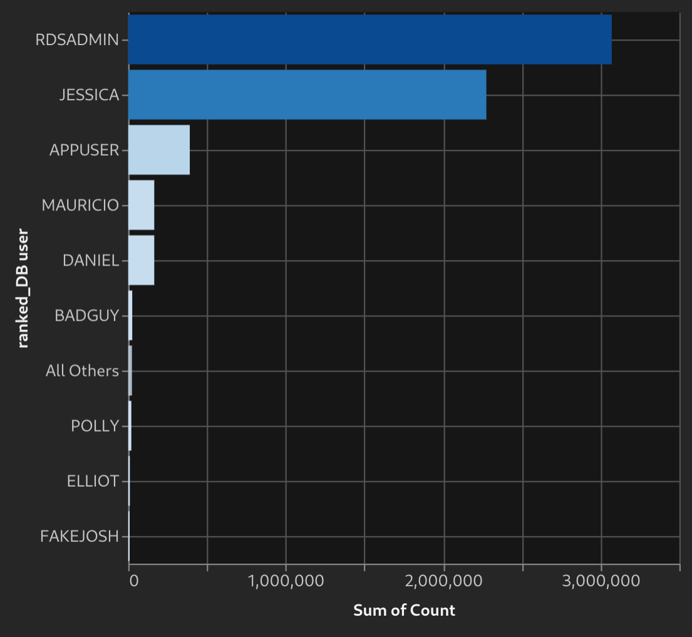

Guardium Insights charts
A resource for understanding Guardium Insights flex-charts through examples. Copy, paste, and adjust the definitions to make them your own.
Age of audit tasks
User scatterplot showing number of connections and SQL
Failed test severity with custom color mappings
Long term datamart ingestion chart
Datamart ingestion bubble per file
Percentage difference between days
Failed login count with visualized threshold
Failed test severity over time
Histogram of SQL per day
Weekday and hour analysis
Multi-week hour-date heatmap
Map showing client connections
Object-Verb access bubble chart
Yesterday's object access compared to mean
Stale users - time since last login
Three octet connection analysis heatmap
Top 10 users by connection count

2 axis, 2 series chart
User audit trail - object and verb access
Yesterday's SQL counts per user comparison to box-plot
Yesterday's user sql count z-score